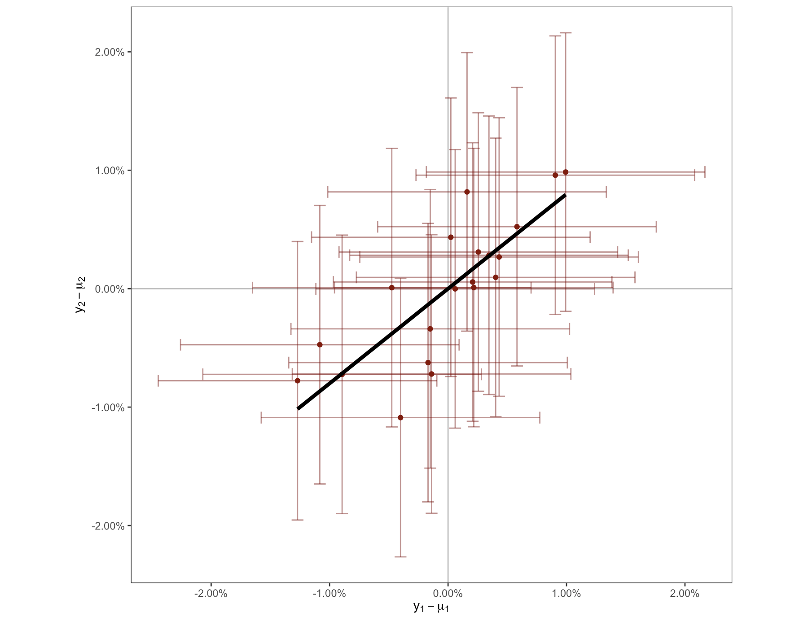

Summary:
Most problems related to experiment interpretation can be formalized as conditional expectations of treatment effects. This includes problems such as selection effects, shrinkage, surrogacy, meta-analysis, long-term effects, composite metrics, launch rules, peeking.
If we simplify to Gaussian priors over treatment effects then the conditional expectations have simple linear forms, depending only on the variances and covariances of treatment-effects and of noise.
Overview
Suppose we observe treatment effects across a set of \(n\) different metrics \(\hat{\bm{t}}=(\hat{t}_1,\ldots,\hat{t}_n)\). We can decompose these into the true effect and the noise: \[\begin{aligned} \utt{\hat{\bm{t}}}{observed}{experiment effects} &= \utt{\bm{t}}{true avg}{treatment effects} + \utt{\bm{e}}{noise}{(=user-level variation)} \\ \bm{e} &= \utt{\frac{1}{N}\sum_{j\in T}\bm{x}^j}{users in}{treatment} - \utt{\frac{1}{N}\sum_{j\in C}\bm{x}^j}{users in}{control} \end{aligned} \]
Here \(\bm{x}^j\) represents the outcome of user \(j\) without treatment. We generally want to infer the average treatment effect from the observed effect: \[E[\bm{t}|\hat{\bm{t}}].\]
We know the variance and covariance of \(\bm{e}\) from observational user data.
The observed effect will be our best-guess for the true effect (\(E[\bm{t}|\hat{\bm{t}}]\simeq\hat{\bm{t}}\)) only when either our prior on \(t\) is very broad (\(\sigma_t^2\simeq\infty\)) or confidence intervals are very tight (\(\sigma_e^2\simeq0\)). In most practical cases the interpretation of the experiment outcome will depend on our prior over treatment effects. We can write out some simple applications of this framework (for compactness we write everything as if we had a mean-zero prior, \(E[\bm{t}]=0\)):
With Gaussian treatment-effects we have closed-form posteriors. With Gaussian priors there is a linear relationship between observed estimates and posteriors, the coefficients depend just on the variance and covariance of treatment effects and noise (\(\Sigma_t\) and \(\Sigma_e\)): \[\begin{aligned} \mathbb{E}[t|\hat{t}] &= \frac{\sigma_t^2}{\sigma_t^2+\sigma_e^2}\hat{t} && \text{(univariate)} \\ \mathbb{E}[t_1|\hat{t}_2] &= \rho_t\frac{\sigma_{t1}}{\sigma_{t2}}\frac{\sigma_{t2}^2}{\sigma_{t2}^2+\sigma_{e2}^2}\hat{t}_2 && \text{(cross-univariate)}\\ \mathbb{E}[t_1|\hat{t}_1,\hat{t}_2] &= \text{(see below)} && \text{(bivariate)}\\ \mathbb{E}[\bm{t}|\hat{\bm{t}}] &=\Sigma_t(\Sigma_t+\Sigma_e)^{-1}\hat{\bm{t}} && \text{(multivariate)} \\ \end{aligned} \]
Experiment surrogacy. When we want to predict the treatment-effect on an unobserved outcome (e.g. a future outcome) we can write the problem as: \[\begin{aligned} \mathbb{E}[t_2|\hat{t}_1] &= \frac{\rho_t\sigma_{t1}\sigma_{t2}}{\sigma_{t1}^2+\sigma_{e1}^2} \hat{t}_1 && \text{(univariate)} \end{aligned} \]
Causal relationships. Sometimes we want to know the relationship between two causal effects: \[\mathbb{E}[t_2|t_1] = \rho_t\frac{\sigma_{t2}}{\sigma_{t1}}t_1.\]
The naive solution of running a regression on observed experiment outcomes (\(\frac{cov(\hat{t}_1,\hat{t}_2)}{var(\hat{t}_1)}\)) will yield a coefficient that has both (1) attenuation bias (because we observe \(\hat{t}_2\) instead of \(t_2\)), and (2) activity bias (because there is correlation between \(e_1\) and \(e_2\)).
Composite metrics. Sometimes we wish to define a single composite metric as a weighted average across all metrics, with \(\bm{w}=(w_1,\ldots,w_n)\), so total value is \(\bm{w}'\bm{t}\). We can estimate the full impact by applying these weights to our posteriors: \[\mathbb{E}[\bm{w}'\bm{t}|\hat{\bm{t}}]=w'\mathbb{E}[\bm{t}|\hat{\bm{t}}].\]
However if we applied the weights directly to the raw estimates (\(\bm{w}'\hat{\bm{t}}\)) this would be a poor guide to impact, in addition such a composite will often have high noise (low signal-noise ratio, lower power) because of positive covariance among the components of \(\bm{e}\).
Launch rules. Many companies come up with “launch rules” which are functions of the observed experiment outcomes, \(f(\hat{\bm{t}})\in\{0,1\}\). However it’s often unclear the best way to define this function. It is useful to think of \(f(\cdot)\) as a forecast of the long-term impact on fundamental business goals, which can then be calibrated based on the variances and covariances above. We should treat this forecast as a simple extrapolation, but one that can be overriden when we have additional information, especially when the forecast has a low \(R^2\).
Other things to add:
- High dimensionality.
- Nonlinearity
- SNR from fraction significant
- AA tests
Philosophical Remark: Confounding and Noise
\[\boxed{\substack{\text{best-estimate}\\\text{causal}\\\text{effect}}} = \underbrace{\vphantom{\boxed{\substack{a\\b\\c}}}\boxed{\substack{\text{correlation}}}}_{\text{directly observed}} + \underbrace{\boxed{\substack{\text{adjustment for}\\\text{confounding}}} }_{\text{requires judgment}} + \underbrace{\boxed{\substack{\text{adjustment for}\\\text{noise}}} }_{\text{requires judgment}} \]
Estimating causal effects from correlations requires two adjustments:
- Adjustment for confounding: This is not necessary when we have a randomized experiment or another credible source of identification.
- Adjustment for noise: This is not necessary if studies have very large \(N\) (and so tight confidence intervals).
Many fields sets a premium on evidence where there is low confounding (“identification”). E.g. RCTs, natural experiments, complex estimators. The downside is that these fields will ignore a lot of potentially interesting evidence, e.g. evidence-based medicine movement restricting itself to randomized trials, and economics restricted itself to evidence with identification.
A lot of studies with no confounding problems fail to adjust for priors. Papers often just report the raw estimate or p-value. However unless N is very large this doesn’t reflect a good practical inference, we often need to substantially adjust towards our priors, which often means adjusting towards zero.
Setup
A single metric. We observe \(\hat{t}\) which is the true treatment effect plus noise, \(\hat{t}=t+e\). Then for any given \(t\) our posterior probability will be:
\[\begin{aligned} \ut{f(t|\hat{t})}{posterior}=\ut{f(t)}{prior}\times \ut{f(\hat{t}|t)}{likelihood} \end{aligned} \]
If the prior is entirely flat then the posterior will be the likelihood, in other words the classical point-estimate and distribution will be exactly equal to the Bayesian posterior estimate and distribution.
Two metrics. Suppose that you run an experiment with \(N\) units assigned to treatment and control groups, and define \(\hat{t}_1\) and \(\hat{t}_2\) as the observed treatment effects for outcomes 1 and 2. We can decompose the observed outcomes into treatment-effects and noise:
\[ \underbrace{\binom{\hat{t}_1}{\hat{t}_2}}_\text{outcomes} = \underbrace{\binom{t_1}{t_2}}_\text{treatment effects} + \underbrace{\binom{e_1}{e_2}}_\text{noise} \]
In this paper we will be particularly interested in the covariances of the treatment effects, and of the noise.
The noise terms \(e_1\) and \(e_2\) represent the sampling error, and therefore will have variances and covariances corresponding to the variances and covariances of the individual units, multiplied by a factor of \(\frac{2}{N}\).1.
The variances and covariances of \(t_1\) and \(t_2\) represent the experimenter’s priors, and so are often difficult to quantify. If we are willing to identify priors with some set of previously-run experiments, i.e. an “empirical-Bayes” technique, we can recover them from the data using this relationship between covariance matrices:
\[\Sigma_{\hat{t}}= \Sigma_t + \frac{2}{N}\Sigma_u,\]
where \(\Sigma_u\) is the unit-level covariance matrix. The following graph illustrates a case with negatively-correlated treatment effects, positively correlated noise, and uncorrelated outcomes.
Many metrics. If we assume that everything has a normal distribution, we have a crisp expression for how the posterior expectations depend on the observed outcomes. For an arbitrary number of outcomes we can write this as:
\[\mathbb{E}[t|y]=\mu_t+\Sigma_t(\Sigma_t+\frac{1}{N}\Sigma_u)^{-1}(y-\mu_t).\]
Univariate Shrinkage Estimators
See survey of methods in Azevedo et al. (2019). They also document the fat tailed distribution of effect-sizes.

James-Stein. With a Normal prior, \(t\sim N(\mu_t,\sigma_t^2)\), we get: \[\mathbb{E}[t|y]=\mu_t+\utt{\frac{\sigma_t^2}{\sigma_t^2+\sigma_e^2}}{shrinkage}{factor}(y-\mu_t).\] We can also use the share of experiments that are significant, \(p\): \[\begin{aligned} E[t|y]=& [ 1-(\frac{1}{1.96}\Phi^{-1}(\frac{p}{2}))^2 ]y. \end{aligned}\] When \(p=5\)% the shrinkage factor is 0, when \(p=15\)% shrinkage is .5, when \(p=50\)% shrinkage is .88.
Tweedie’s Formula. Allow treatment-effects to have any distribution, \(t\sim g(\cdot)\), but still have Gaussian error. We can show that: \[E[t|y]=y + \sigma^2_e\frac{f'(y)}{f(y)}.\] Requires estimating a continuous density of outcomes \(\hat{f}(y)\) – there are various nonparametric ways of doing that. Implication: shrink only when the density of \(y\) is sloping, not where it’s flat. See Efron and Hastie (2021).
Experiment Splitting. See Coey and Cunningham (2019).
Deconvolution. If we can estimate the distribution \(t\sim g(\cdot)\) from \(f(y)\), then we have: \[\mathbb{E}[t|y]=\frac{\int_t t(g(t)+f(y-t))dt}{\int_t t(g(t)+f(y-t))dt}.\] Discussed in Efron and Hastie (2021).
Multivariate Shrinkage [UNFINISHED]
Multivariate Gaussian. (Curds & Whey)
L1 penalty. (Lasso)
Experiment splitting. Coey and Cunningham (2019) found significant improvements by conditioning on other outcomes for Facebook experiments.
PPL.
Bivarate Normal Shrinkage
We can write it like this: \[\utt{\binom{\hat{t}_1}{\hat{t}_2}}{observed}{effects} =\utt{\binom{t_1}{t_2}}{true}{effects} +\ut{\binom{e_1}{e_2}}{noise}\]
With just two outcomes Normal shrinkage becomes:2
\[\begin{aligned} \mathbb{E}[t_1| \hat{t}_1,\hat{t}_2] =& \mu_1 +\ut{|\Sigma_{\hat{t}}|^{-1}(\sigma^2_{t1}(\sigma^2_{t2} + \sigma^2_{e2}) - \gamma_{t}(\gamma_{t}+\gamma_{e}))}{coeff on $\hat{t}_1$}(\hat{t}_1-\mu_1) + \ut{|\Sigma_{\hat{t}}|^{-1}(\gamma_{t}\sigma^2_{e1} - \gamma_{e}\sigma^2_{t1})}{coeff on $\hat{t}_2$} (\hat{t}_2-\mu_2) \\ |\Sigma_{\hat{t}}| =& (\sigma_{t1}^2+\sigma_{e1}^2) (\sigma_{t2}^2+\sigma_{e2}^2) - (\gamma_t+\gamma_e)^2 \end{aligned}\]
Where \(\gamma_t=\text{cov}(t_1,t_2)\) and \(\gamma_e=\text{cov}(e_1,e_2)\). The result can be visualized with a vector field showing the mapping from a pair of observed outcomes, \(\binom{\hat{t}_1}{\hat{t}_2}\), into a pair of inferred outcomes, \(E[{t_1\atop t_2}|{\hat{t}_1\atop \hat{t}_2}]\).
More traditionally we can split the treatment-effects and noise into common and orthogonal components:
\[\begin{aligned} \hat{t}_1 &= t + \tilde{t}_1 + e + \tilde{e}_1 \\ \hat{t}_2 &= t + \tilde{t}_2 + e + \tilde{e}_2 \end{aligned}\]
And so do a DAG:
\[\xymatrix@R=.2cm{ & \tilde{t}_1\ar[d] & & \tilde{e}_1\ar[d] \\ & t_1 \ar[r] & \hat{t}_1 & e_1 \ar[l] \\ t\ar[ur]\ar[dr] & & & & e\ar[ul]\ar[dl] \\ & t_2 \ar[r] & \hat{t}_2 & e_2 \ar[l] \\ & \tilde{t}_2\ar[u] & & \tilde{e}_2\ar[u] }\]
The Peysakhovich and Eckles (2018) IV setup assumes \(\tilde{t}_1=\tilde{t}_2=0\), i.e. the causal effects on outcome 1 and 2 have a fixed relationship. This is necessary if we want to estimate the causal relationship of outcome 1 on outcome 2, but not for the simpler and more common problem of using outcome 1 as a proxy for estimating the effect on outcome 2.
We can make a few broad observations based on the equation above.
First, if there is no covariance either across treatment-effects (\(\gamma_t=0\)), or across units (\(\gamma_e=0\)), then the expression reduces to univariate shrinkage, i.e.:
\[\mathbb{E}[t_1|\hat{t}_1,\hat{t}_2]=\mathbb{E}[t_1|\hat{t}_1]=\mu_1+\frac{\sigma_{t1}^2}{\sigma_{t1}^2+\sigma_{e1}^2}(\hat{t}_1-\mu_1).\]
Some evidence on the importance of the covariance matrices comes from Coey and Cunningham (2019), which finds that multivariate shrinkage of experiment results significantly outperforms univariate shrinkage, but was not able to establish how much of this was due to cross-outcome relationships in the treatment-effects vs the noise.
Second, if there is only covariance across treatment-effects, and that covariance is positive, (\(\gamma_t>0,\gamma_e=0\)), then each observed outcome is “good news” about the treatment-effect on the other outcome, i.e.: \[\frac{dE[t_1| \hat{t}_1,\hat{t}_2]}{d\hat{t}_2} > 0, \frac{dE[t_2| \hat{t}_1,\hat{t}_2]}{d\hat{t}_1} > 0.\] Intuitively – if you expect your experiment to shift both outcomes in the same direction, then seeing a positive effect on one outcome will positively reinforce your belief in the effect on the other outcome.
Good News is Bad News (weak version). When the relative covariance of noise is stronger than the relative covariance of the treatment-effects, then we will find that a higher-than-expected outcome on outcome 2 will be a negative signal about the treatment-effect on outcome 1. Formally:
\[\frac{dE[t_1| \hat{t}_1,\hat{t}_2]}{d\hat{t}_2} < 0 \iff \frac{\gamma_{t}}{\sigma_{t1}^2} < \frac{\gamma_{e}}{\sigma^2_{e1}}\]
In many contexts we believe that this condition is likely to hold. Most desirable outcomes tend to have positive covariance across experimentation units (\(\gamma_e>0\)), e.g. among people wealth, physical health, mental health, and education all tend to covary positively. Among users of online services, those who are more active on one dimension tend to be more active on all others. On the other hand, treatments tested in experiments often find trade-offs with other outcomes (\(\gamma_t<0\)): e.g. promoting one part of a product tends to cannibalize time spent on other parts.
Example. A school runs an experiment with a new English textbook, and they find an increase in English test-scores. Suppose they also find an increase in Maths test-scores: this would be bad news about the true impact on English ability if (a) there is strong positive correlation among students between English and Maths test-scores, (b) there is not a strong prior reason to believe that there would be a positive spillover on Maths test-scores.
Good News is Bad News (strong version).In some cases an even stronger result holds: \(\hat{t}_1\) is bad news about \(t_1\) itself:
\[\begin{aligned} \frac{dE[t_1| \hat{t}_1,\hat{t}_2]}{d\hat{t}_1} < 0 \iff 1 <& \frac{\gamma_{t}}{\sigma_{t1}^2} \frac{\gamma_{t}+\gamma_{e}}{\sigma^2_{t2} + \sigma^2_{e2}}. \end{aligned}\]
The condition requires there be non-zero covariance in both the treatment-effects and the unit-level outcomes (i.e., both \(\gamma_t\neq0\) and \(\gamma_e\neq0\)).3 We also can see that the two covariances must have the same sign – either both positive or both negative. Intuitively, this will occur when treatment-effects are closely correlated, such that \(\hat{t}_2\) is a relatively better signal for \(t_1\) than \(\hat{t}_1\) itself, and so \(\hat{t}_1\) instead becomes a signal for the correlated noise.
Example. You run an experiment where you randomly select married households and provide the wife with vocational training and education, and measure the impact on both the wife’s income, and the overall household’s income. You find that average annual female labor income increased by $1,000. However, you also find that average annual household income increased by $3,000, implying the average male income in the treated group is $2,000 higher than in the control group. If you believe that (a) the spillover effect from wife’s income to husband’s income is likely to be small or negative, and (b) the correlation between wife’s and husband’s income is strong, then this evidence should cause you to decrease your estimate of the true impact on both the wife’s income and the total income.
The following vector-field illustrates the strong version of the “good news is bad news” effect: it can be seen that, for a given value of \(\hat{t}_2\), progressively higher values of \(\hat{t}_1\) are mapped into relatively lower values of \(t_1\).
Summary
We can compare various quantities in the bivariate case. I put hats on the quantities that are functions of observable data:
\[\begin{aligned} \hat{\beta}^{OLS} =&\frac{dE[\hat{t}_2|\hat{t}_1]}{d\hat{t}_1} &=& \text{Predicted observed effect given observed effect} \\ \beta^{SURROGATE} =& \frac{dE[t_2|\hat{t}_1]}{d\hat{t}_1} &=& \text{Predicted true effect given observed effect} \\ \beta^{CAUSAL} =& \frac{dE[t_2|t_1]}{dt_1} &=& \text{Predicted true effect given true effect (can be interpreted as causal if $t_1\rightarrow t_2$)} \\ \hat{\beta}^{AA} =& \frac{dE[e_2|e_1]}{de_1} &=& \text{Predicted noise given noise} \end{aligned}\]
\[\begin{aligned} \hat{\beta}^{OLS} &= \frac{\text{cov}(\hat{t}_1,\hat{t}_2)}{\text{var}(\hat{t}_1)} = \frac{\gamma_t+\gamma_e}{\sigma_{t1}^2+\sigma_{e1}^2} = \frac{\gamma_t+\gamma_e}{\sigma_{e1}^2(1+SNR_1)}\\ \beta^{\text{SURROGATE}} &= \frac{\text{cov}(t_2,\hat{t}_1)}{\text{var}(\hat{t}_1)}=\frac{\gamma_t}{\sigma_{t1}^2+\sigma_{e1}^2} =\frac{\gamma_t}{\sigma_{e1}^2(1+SNR_1)} \\ \beta^{\text{CAUSAL}} &= \frac{\text{cov}(t_2,t_1)}{\text{var}(t_1)}=\frac{\gamma_t}{\sigma_{t1}^2} \\ \hat{\beta}^{AA} &= \frac{cov(e_2,e_1)}{var(e_1)} = \rho_e\frac{\sigma_{e2}}{\sigma_{e1}} \end{aligned}\]
We can recover the surrogate relationship from the OLS. The terms on the right can be inferred from the distribution of user-level outcomes (or from \(\hat{\beta}^{AA}\)) and from the distribution of experiment outcomes.4
\[\begin{aligned} \hat{\beta}^{\text{SURROGATE}} &= \hat{\beta}^{\text{OLS}} - \frac{\gamma_e}{\sigma_{t1}^2+\sigma_{e1}^2} = \hat{\beta}^{\text{OLS}} - \ut{\rho_e\frac{\sigma_{e2}}{\sigma_{e1}}\frac{1}{(1+SNR_1)}}{correct for activity}. \end{aligned}\]
We can also recover the causal relationship from the OLS: \[\begin{aligned} \hat{\beta}^{\text{CAUSAL}} &= \frac{\sigma_{e1}^2(1+SNR_1)\hat{\beta}^{OLS}-\gamma_e}{\sigma_{e1}^2SNR_1} \\ &=\underbrace{\frac{SNR_1+1}{SNR_1}}_{\text{correct for attenuation}}\hat{\beta}^{OLS} - \underbrace{\frac{\sigma_{e2}}{\sigma_{e1}}\frac{\rho_e}{SNR_1}}_{\text{correct for activity}} \end{aligned}\]
We can also recover effects of interest by splitting samples. We can think of splitting as giving us as an additional set of experiments with the same treatment effects but independent noise: \[\binom{\hat{t}_1'}{\hat{t}_2'} = \binom{t_1}{t_2} + \binom{e_1'}{e_2'}\]
We can regress \(y'_2\) on \(\hat{t}_1\) and it will recover the surrogate relationship: \[\begin{aligned} \hat{\beta}^{SPLIT} &= \frac{cov(\hat{t}_2',\hat{t}_1)}{cov(\hat{t}_1)} = \frac{\gamma_t}{\sigma_{t1}^2+\sigma_{e1}^2} = \hat{\beta}^{SURROGATE} \end{aligned} \]
Experiment Surrogacy
When we wish to estimate effects on a noisy outcome, investigators often try to find a “surrogate” outcome that is a good predictor of the primary outcome but more precisely measured. Sometimes surrogacy relationships are estimated by a simple regression across experiment outcomes. However this will give a biased estimate because the coefficient will pick up the covariance between units, as well as covariance between experiments:
\[\begin{aligned} \hat{\beta}^{OLS}= \frac{dE[\hat{t}_2|\hat{t}_1]}{d\hat{t}_1} = \frac{\text{cov}(\hat{t}_1,\hat{t}_2)}{\text{var}(\hat{t}_1)} =\frac{\gamma_t+\gamma_e}{\sigma_{t1}^2+\sigma_{e1}^2}. \end{aligned} \]
Figure 1 plots a set of AA tests with no true treatment effect on either outcome. Despite the lack of any relationship between treatment-effects, we find a significant relationship between outcomes, due to covariance among units.
However the quantity of interest for a surrogate variable is instead:
\[\begin{aligned} \frac{dE[t_2|\hat{t}_1]}{d\hat{t}_1} = \frac{\text{cov}(t_2,\hat{t}_1)}{\text{var}(\hat{t}_1)}=\frac{\gamma_t}{\sigma_{t1}^2+\sigma_{e1}^2}. \end{aligned} \]
To calculate the correct quantity we can estimate the covariance across treatment-effects by taking the difference between observed covariances across experiments and that expected from AA-tests: \(\hat{\gamma_t}=\gamma_y-\frac{1}{N}\gamma_u\).

The bias described will decline with sample-size N, but is invariant to the number of experiments. Additionally, if there is no true treatment-effect on outcome 1 (\(\sigma_{t1}^2=0\)), as in the AA-tests illustrated in Figure 1, then the estimated \(\hat{\beta}\) will always equal \(\frac{\gamma_e}{\sigma_e^2}\), even as the sample-size goes to infinity.
Causal Effects / Instrumental Variables
In other circumstances we wish to understand the relationship between treatment-effects, i.e.:5
\[\frac{dE[t_2|t_1]}{dt_1}=\frac{\gamma_t}{\sigma_{t1}^2}.\]
Again this does not correspond to the quantity recovered by a regression, \(\hat{\beta}\) above. There are now two biases: (1) an “activity” bias due to \(\gamma_e\) in the numerator of \(\hat{\beta}\); (2) an attenuation bias due to \(\sigma_{e1}^2\) in the denominator of \(\hat{\beta}\).
Example. You run a series of A/B experiments meant to improve music recommendations and are interested in how these experiments impact time-spent on music, and potential cannibalization of time-spent on podcasts. Estimating a cannibalization rate by regressing podcast_time on music_time, across experiments, would lead to underestimating the true rates of cannibalization for two reasons: (1) positive unit-level covariance between the two outcomes causing positive correlation between the two outcomes, (2) noise in the estimate of the treatment-effects on music_time, causing attenuation towards zero.
Peysakhovich and Eckles (2018) estimate a model in which \(t_2=\beta t_1\) (i.e. they assume \(\rho_t=1\)). They show that the weak-instrument bias will be small if they (1) regularize so that only experiments with high SNR are included, and (2) calibrate the regularization by splitting samples.
Observational Surrogacy
Summary: Suppose we want to know the effect of experiment \(t\) on \(y\), but it’s too hard to measure either because (1) \(y\) has very broad confidence intervals, or (2) \(y\) takes a long time (e.g. it’s a long-run outcome). Then we can use the causal effect on \(x\), and the correlation between \(x\) and \(y\). The key assumption is that the effect of \(t\) on \(y\) is mediated entirely through \(x\).
Setup
Let \(t\) be the experiment, \(y\) be the outcome, \(x\) be the “surrogate” variable, and \(w\) is the unobserved influences on \(x\). We can write this as:
\[\xymatrix@C=2cm{ & *+[F-:<6pt>]{w}\ar[d]|{\alpha_w} \ar@{.>}[dr]|{\beta_w} \\ *+[F]{t} \ar[r]|{\alpha_t} \ar@{.>}@/_2pc/[rr]|{\beta_t} & *+[F]{x} \ar[r]|{\beta_x} & *+[F]{y} }\]
\[\begin{aligned} x &= \alpha_t t + \alpha_w w + u\\ y &= \beta_t t + \beta_w w + \beta_x x + v\\ \end{aligned}\]
We are interested in the effect of \(t\) on \(y\). We can directly estimate that as: \[\begin{aligned} \frac{cov(y,t)}{var(t)}= \utt{\beta_t}{direct}{effect} + \utt{\alpha_t\beta_x}{effect}{thru $x$} && \text{(effect of $t$ on $y$)} \end{aligned}\]
Alternatively we can estimate the effect in two stages with surrogacy:
\[\begin{aligned} \hat{\alpha}_t &= \frac{cov(x,t)}{var(t)} = \alpha_t \\ \hat{\beta}_x &= \frac{cov(t,x)}{var(x)} = \utt{\beta_x}{direct}{effect} + \ut{\frac{\beta_w\alpha_w\sigma_w^2 }{\sigma_x^2}}{confounding} && \text{(setting $\sigma_t^2=0$)} \end{aligned}\]
We can see that the surrogacy estimator (\(\hat{\alpha}\cdot\hat{\beta}\)) will be equal to the true effect only if two conditions hold:
- Exclusion (\(\beta_t\simeq 0\)): the experiment only affects \(y\) via \(x\).
- Unconfoundedness (\(\beta_w\simeq 0\)): there is no unobserved factor affects both \(x\) and \(y\) (i.e. all effects on \(y\))
Alternative way of stating the assumptions. Athey et al. (2019) state two assumptions: (1) unconfoundedness of treatment (i.e. \(t\) is orthogonal to everything); (2) surrogacy: \(t \perp\!\!\!\perp y|x\), described as “the surrogates fully capture the causal link between the treatment and the primary outcome.” Their assumption (2) follows from my assumptions (1) and (2) above. I prefer separating out these assumption to add clarity. See appendix to their paper for discussion of alternative formulations of surrogacy assumptions.
Additional Issues
Controls. You can improve precision by controlling for other variables, but you should be confident they’re independent of \(t\): either use demographics, or variables that are determined before treatment. (Also if the control variables have low explanatory power for \(w\) then they could make the confidence intervals worse, so don’t just throw in any controls.)
Noisy proxies. Suppose we observe only a noisy proxy of \(x\): \[\xymatrix@C=2cm@R=.8cm{ *+[F]{t} \ar[r]|{\alpha_t} & *+[F-:<6pt>]{x} \ar[r]|{\beta_x}\ar[d] & *+[F]{y} \\ & *+[F]{x^*} }\] \[\begin{aligned} y &= \beta_x x + \varepsilon_y \\ x^* &= x + \varepsilon_{x^*} \\ x &= t + \varepsilon_x \\ \end{aligned}\] The estimate of \(\beta_x\) will be biased down a bit due to attenuation: \[\begin{aligned} \frac{cov(y,x^*)}{var(x^*)} &= \beta_x\frac{\sigma_x^2}{\sigma_x^2+\sigma_{\varepsilon_{x^*}}} \end{aligned}\] We can quantify bias with assumptions on signal-noise ratio (\(\frac{\sigma_e}{\sigma_x}\)).
Estimating causal effect. You can try to estimate effect of \(x\) on \(y\) with \(\frac{cov(y,t)}{cov(x,t)}\). This requires only the exclusion restriction, not unconfoundedness. However it’ll be biased towards the correlation, as discussed above.
Other issues.
- composite metrics. Can try to estimate a rich proxy with many variables.
Surrogacy Examples
[see other doc for ranking]
Impact of exposure on survey outcomes.
\[\xymatrix{ *+[F]{\text{ranking change}} \ar[r] \ar@/_2pc/[rr] & *+[F]{\text{impressions of porn}}\ar[r] & *+[F]{\text{self-reported porn-seen}} }\]
Impact of product change on survey outcomes.
\[\xymatrix{ *+[F]{\text{ranking change}} \ar[r] \ar@/_2pc/[rr] & *+[F]{\text{user behaviour}}\ar[r] & *+[F]{\text{survey results on satisfaction}} }\]
Long-run impact of employment program. Used in Athey paper:
\[\xymatrix{ *+[F]{\text{training program}} \ar[r] \ar@/_2pc/[rr] & *+[F]{\text{short-run employment}}\ar[r] & *+[F]{\text{long-run employment}} }\]
- Exclusion: training program only affects long-run employment thru short-run employment.
- Unconfoundedness: no factors affect long-run employment except thru short-run.
- Dangers to identification: if the program artificially increases short-run employment.
Composite Metrics
TL;DR: unshrunk composite metrics often have worse SNR than their components.
We sometimes want to estimate the impact of an experiment on a “composite” outcome, a linear combination of \(n\) outcomes with weights \(w=(w_1,\ldots,w_n)\). It is useful to calculate the signal-to-noise ratio (SNR) of the composite metric, \(\bar{y}\):
\[\begin{aligned} \text{SNR}_{\bar{y}}=& \frac{Var[w't]}{Var[w'e]}= \frac{w'\Sigma_tw}{w'\Sigma_ew}. \end{aligned}\]
The signal-noise ratio is a useful statistic to track because an outcome with a higher SNR will have (a) a lower shrinkage factor, i.e. the posterior \(E[t|y]\) will be relatively closer to the observed \(y\), and (b) will have a higher fraction of experiments that are statistically significantly different from zero:6
\[\begin{aligned} \text{shrinkage factor}=& 1-\frac{E[t|y]-\mu}{y-\mu}=\frac{1}{1+SNR},\\ \text{fraction significant}=& P(|y-\mu|>1.96\sigma_e) \\=& 2\Big(1-\Phi(\frac{1.96}{1+SNR})\Big). \end{aligned}\]
Where \(\Phi\) is the CDF of a standard Normal distribution.
We can make two observations about the signal-noise ratio of a composite metric:
If all covariance terms are zero, across treatments and units, then the SNR of \(\bar{y}\) will be a weighted average of the SNR of each of the components: \[\text{SNR}_{\bar{y}}= \frac{\sum w_i^2\sigma_{ti}^2}{\sum w_i^2\sigma_{ei}^2} = \sum_i \frac{w_i^2\sigma_{ei}^2}{\sum_j w_j^2\sigma_{ej}^2} \text{SNR}_{y_i}.\] This implies that adding a new component to a composite metric will increase its SNR (and so increase the fraction of statistically-significant experiments) if and only if the new component has a higher SNR than the existing composite metric.
If the outcomes have positive covariance across units, but zero covariance across treatments, the composite’s signal-noise ratio will be below the weighted-average SNR. This can be seen in the first equation for \(\text{SNR}_{\bar{y}}\): the covariance terms in the error will show up in the denominator, causing the SNR to decline.
These observations are consistent with the general observation that tech companies often struggle when dealing with metrics that are designed to reflect the full business impact of an experiment: if they add all outcomes of interest into the composite metric, the composite will be relatively noisy for two reasons: (1) because some components are noisy, and (2) because of positive covariance in the noise components.
An optimally shrunk composite metric will take into account the noise. If there is no covariance then we have:
\[\mathbb{E}[t|\hat{t}_1,\ldots,y_n]=\sum_{i=1}^n \frac{\text{SNR}_i}{1+\text{SNR}_i}w_iy_i.\]
This estimate of the composite will appropriately shrink noisy components, and so there is no longer a penalty for adding additional components to the composite. If there is covariance then the full expression will be:
\[\mathbb{E}[\bar{t}|y]=w'\mathbb{E}[t|y].\]
Launch Rules
Launch rules contain many considerations. Many companies have “launch rules” which map experiment outcomes into a launch decision. In practice there are many considerations that affect launch rules:
- Fundamental tradeoffs. A launch rule expresses the company’s fundamental values: e.g. willingness to trade-off revenue against the quality of service provided. In addition launch rules are often adjusted to help reach specific goals for a team, e.g. increasing DAU by 0.2% while not harming quality.
- Inference. A launch rule is based on noisy signals of true causal effects, thus it incorporates inference, often putting weight on metrics that not valuable in themselves but proxies for valuable things that are hard to measure.
- Forecasting. A launch rule is aiming at long-run effects while usually based on short-run experimental results, thus incorporates a forecast.
- Network effects. A launch rule based on user-level experiment results, but aiming to maximize aggregate outcomes, must account for network effects.
- Commitment/Fairness. Engineers and Data Scientists will often ask for an explicit commitment to a launch rule to help their own decision-making. A launch rule is typically expected to be fair in some sense: e.g. to be independent of the identity of the person who ran the experiment, even if the person’s identity is in fact good predictor of the long-run outcome.
Recommendation: treat launch rules as forecasts. I think it’s best to divide launch decisions into three parts:
Choose a set of proximal metrics. These are the metrics on which we are confident we can detect our experiment’s effect, meaning the measured impact will be close to the true impact. The proximal metrics will vary depending on the experiment, e.g. Notifications experiments have reliable effects on DAU, other experiments do not. To determine whether a metric is moved we can use the fraction of a given class of experiments that have a statistically-significant effect on that metric: if the share is greater than 50% then we can be confident that the estimated effect is close to the true effect.7
Identify conversion factors between proximal and final metrics. These tell us the best-estimate impact on final metrics given the impact on proximal metrics. Conversion factors can be estimated either from (a) long-running tuning experiments; (b) a meta-analysis of prior experiments with similar designs. This is essentially a forecast (you could call it a “shipping forecast”) and the quality of the forecast can be evaluated statistically from prior experiments, and sometimes it will be appropriate to over-ride the forecast on the basis of additional information. Additionally the \(R^2\) of prior forecasts helps calibrate how confident we should be about future forecasts.
Establish conversion factors between final metrics. E.g. we might say we’d put an equal weight on 1% DAU, 2% minutes/DAU, 5% posts/DAU, and 100% prevalence of spam.
Comparing Launch Rules
Suppose we have two metrics, 1 and 2, and we care about them equally much: \[U(t_1,t_2)=t_1+t_2.\]
But we only observe noisy estimates \(\hat{t}_1,\hat{t}_2\).
A stat-sig shipping rule (either stat-sig positive, neither stat-sig negative) has some strange consequences: it will recommend shipping things even with negative face-value utility (\(U(\hat{t}_1,\hat{t}_2)<0\)), when there’s a negative outcome on the relatively noisier metric. This will still hold if we evaluate utility with shrunk estimates, when there’s equal proportional shrinkage on the two metrics, but if there’s greater shrinkage on the noisier metric it will not hold.
Kohavi, Tang & Xu (2020) Trustworthy Online Controlled Experiments recommends a stat-sig shipping rule (p105): “(1) If no metrics are positive-significant then do not ship; (2) if some are positive-significant and none are negative-significant then ship; (3) if some are positive-significant and some are negative-significant then”decide based on the tradeoffs.” I think this is bad advice: the statistical significance of an estimate is only loosely related to the informativeness of that estimate. The decision should be made based on your best estimates of the impact on the overall goal metrics.


Network and Dynamic Effects
Given an observed experimental outcome, \(y\), the relevant policy question is typically the aggregate long-run effect on outcomes, and there are three important considerations: (1) adjusting for experimental noise, as we have discussed in this paper, (2) adjusting for network-effects, and (3) adjusting for dynamic effects. Here we briefly show how all three can be expressed in a very simplifed model. Suppose the behaviour of unit \(i\) at time \(t+1\) depends on (i) some user-specific constant term, \(a_i\), (ii) their own prior behaviour, \(x_{t,i}\), and (iii) the global average \(\bar{x}_t=\frac{1}{n}\sum x_{i,t}\), as:
\[\begin{aligned} x_{i,t+1} =& a_i + Bx_{i,t} + C\bar{x}_t. \end{aligned}\]
Solving for equilibrium, setting \(x_{i,t+1}=x_{i,t}\) we get:
\[\bar{x} = (I-B-C)^{-1}\bar{a}.\]
Where \(\bar{a}=\frac{1}{n}\sum_i a_i\). If we assume that all treatment-effects operate additively on each unit, i.e., through the term \(a_i\), then we can combine this with multivariate shrinkage to get an overall mapping from experiment-level results to long-term aggregate impact, \(\Delta \bar{x}\):
\[\begin{aligned} \Delta\bar{x} =& (I-B-C)^{-1}\Big(\mu_t+\Sigma_t(\Sigma_t+\frac{1}{N}\Sigma_x)^{-1}(y-\mu_y)\Big). \end{aligned}\]
Appendix: Derivation of Multivariate Gaussian Posterior
We start with the most general formula for updating one vector of variables, \(t\), having observed the realization of some other vector, \(y\), given they have a Gaussian joint distribution:
\[\begin{aligned} V\binom{t}{y}=& \begin{pmatrix} \Sigma_t & \Sigma_{t,y}\\ \Sigma_{t,y}^{T} & \Sigma_{\hat{t}} \end{pmatrix}. \end{aligned}\]
Using the Schur complement we have:
\[\begin{aligned} \mathbb{E}[t|y] =& \mu_t+\Sigma_{t,y}\Sigma_{\hat{t}}^{-1}(y-\mu_y) \\ \mathbb{V}[t|y] =& \Sigma_t-\Sigma_{t,y}\Sigma_{t,y}^{-1}\Sigma_{t,y}^{T}. \end{aligned}\]
Intuitively, updating to infer \(\mathbb{E}[t|y]\), can be thought of in three steps: (1) we take the unexpected part of the results, \(y-\mu_y\), (2) we normalize it by dividing it by its own covariance matrix, \(\Sigma_{\hat{t}}\), and (3) we transpose it into the \(t\)-space by multiplying it by the covariance between signal and truth \(\Sigma_{t,y}\).8
When we know that \(y\) represents the results of an experiment with sample-size \(N\), we can write:
\[\begin{aligned} y=& t+\sum_i^N x_i \\ \mathbb{V}\binom{t}{y}=& \begin{pmatrix} \Sigma_t & \Sigma_t \\ \Sigma_t^{T} & \Sigma_t+\frac{1}{N}\Sigma_x \end{pmatrix} \end{aligned}\]
Then the optimal Bayesian inference about the treament effects, \(t\), from the observed outcomes \(y\), will be:
\[\mathbb{E}[t|y]=\mu_t+\Sigma_t(\Sigma_t+\frac{1}{N}\Sigma_x)^{-1}(y-\mu_y).\]
We can also write the solution with respect to the precision matrix, \(\Phi=V\binom{t}{y}^{-1}\):
\[\mathbb{E}[t|y]=\mu_t-\sum_{j=1}^n\frac{\Phi_{t1,y1}}{\Phi_{t1,t1}}(y_j-\mu_{y,j}),\]
If \(\Phi_{t1,y1}=0\) then \(t_1\) and \(\hat{t}_1\) are conditionally independent, and so \(\hat{t}_1\) has no informational content relevant to \(t_1\).
Recommendations
Most experimental estimates are over-estimates. This is because most true effects are near zero and we measure effects with noise.
You should shrink most estimates towards zero. E.g. if the measured effect is +2% the true effect is likely lower, if it’s -1% the true effect is likely higher. Effect-sizes in backtests are typically around half as large as effect-sizes in pre-tests.
You should shrink less if the effect was expected. If this effect is exactly what you expected, do not shrink at all. If you had no reason to expect a non-zero effect, shrink a lot.
You should shrink less if the effect is very significant. E.g. if the p-value is less than .01 then the estimate is more likely to be accurate, and you don’t need to shrink the effect-size proportionately as much (because effect-sizes tend to have fat tails).
You should shrink more if the class of experiments doesn’t move this metric much. You can look at a class of experiments, e.g. those run by a given team, and see the distribution of effect-sizes. If only 10% of effects are significant it implies that the experiments are not moving the metric much, and so any individual estimate should be shrunk pretty heavily.
Write Down Your Priors. E.g., “We’re expecting this feature to impact time-spent by ~+0.5%, and posting by ~0%.” This makes it much easier to be principled about interpreting the outcomes.
Calibrate Priors From Previous Experiments.
- Calculate the fraction of experiments that move a metric significantly.
- Calculate the average drop-off between pre-tests and back-tests.
Incentivize by Impact on Back-Tests, not Pre-Tests.
- If you incentivize by pretest, the rational response is to run a lot of experiments, including crappy ones, and just ship those that look positive.
- If you incentivize by backtest, then engineers will be much more careful to ship changes which genuinely improve metrics.
Difficult Cases
Selection of Experiments
Example: Selection of experiments. Your team goal is to maximize podcast_time, and you want to know what other teams are hurting that metric. You query the experiment DB and find the 10 experiments with the biggest negative effect. How should you interpret them?
Classical advice is to adjust p-values for the number of experiments you selected from (Bonferroni correction). But from a Bayesian point of view it’s irrelevant whether these 10 experiments are taken from a pool of 10 or 1000 experiments.
Bonferroni not about testing multiple outcomes, it’s about testing the most extreme outcome.
The set of experiments is informative about appropriate shrinkage. As discussed look at (i) the average effect, and (ii) the fraction that are significant.
Shrinkage should depend on plausibility of the effect. Can look at how much the experiment moves its primary outcome. Suppose a music-ranking experiment decreases podcast time-spent by 0.4s, and increases music time-spent by 0.2s: the side-effect seems unlikely so shrink the outcome heavily.
Appropriate shrinkage should depend on how significant the effect is. E.g. if the effect-size is 4 standard-errors it doesn’t need much shrinkage.
Example: Selection of Experiments #2. An engineer has an experiment with effect +1% ($$0.5%) on your goal metric. They mention that they ran 20 other experiments, and this is the experiment with the biggest effect.
Recommendation: shrink heavily towards the average effect.
Finding out about other experiments with smaller effects means you should shrink more. Finding out about the 20 other experiments is evidence about the size of the typical effect, and you should shrink towards that average. If the engineers are only showing you their best ones, that is reason to shrink your estimates.
It matters how selection was done. Suppose the engineer chose the highest-effect one by chance, not intention. You should still shrink by the same amount: the distribution is evidence, not the selection rule. However if they had some independent reason for expecting this experiment would be the most effective, that is relevant evidence.
Example: Subgroup Outcomes. You see that the overall time-spent of a feature holdout is -3.5% ($\(0.5%), but in Korea it's -9%(\)$2%). How seriously should you take the Korean effect?
Recommendation: take it seriously, because (a) very significant, and (b) there is high between-country variance.
Is this effect plausible? I.e., do we have reason to expect the effect of this feature to vary a lot by country, and in particular in Korea? We do generally think user behaviour varies a lot by country.
How significance is this effect? The effect is 9 standard-errors – i.e., extremely significant – which makes it much less likely to be noise (\(p\)=.00001).
How much variance in effect is between-country vs within-country? Suppose we see that 1/2 of the countries have effects that are significantly different from the global average effect, this implies that there is a fair amount of variance in effect-sizes, and so reasonable that Korea should be such an outlier.
Example.Your experiment increases music_time, which you expected, and increases podcast_time, which you did not expect.
Implication: The positive effect on podcast_time is bad news about music_time. If outcomes are positively correlated across units but not across treatments then: \[\frac{dE[t_1| \hat{t}_1,\hat{t}_2]}{d\hat{t}_2} < 0.\] In this case good news about one outcome is bad news about the other.
Example: Multiple Outcomes. You run an experiment on movie ranking intended to increase watches, and it works. You additionally see an increase in comments-given. Should the increase in comments give you more confidence or less confidence in the increase in likes?
Recommendation: Good news is bad news, if the side-effect is unexpected.
- If the experiment was expected to increase both metrics - e.g. by increasing overall time spent on feed - then this is good news: it is additional evidence for the effect on likes.
- If the experment was expected to have a null or negative effect on comments – e.g. by boosting like-able posts at the expense of comment-able posts – then this is bad news: the positive effect on comments is likely due to noise, and it should make us expect greater noise in the measure of likes.
Given two treatment effects \(t_1\) and \(t_2\), and two outcomes, \(\hat{t}_1,\hat{t}_2\), and two noise variables, \(e_1,e_2\) then we have the following (in the Gaussian case):
\[\frac{dE[t_1|\hat{t}_1,\hat{t}_2]}{d\hat{t}_2} \propto \text{covariance}_{t_1,t_2}-\text{covariance}_{e_1,e_2}.\]
To Add
- Pareto frontier from experiments
- Variance reduction
- Bandit strategy for experiments
- Design of holdbacks (whether it’s an agency problem or a bandit problem)
- Heterogeneous treatment effects
- List of difficult examples.
- Practical recommendations
- Calculate share of experiments that are statistically-significant.
- Calculate covariance matrix of user-level and experiment-level data.
Discussion on Bayesian vs Frequentist Interpretation
What is Your Prior?
In an ideal world you could specify exactly your prior beliefs about an experiment’s effect – e.g., you could say that you believe this experiment will have a +1.2% effect on time-spent, with a standard deviation of 2%. In that case you could exactly calculate how much an experiment shifts your belief: e.g., seeing a 2% outcome in the experiment shifts your belief from +1.2% to 1.6%.
In practice it’s very difficult to quantify your prior beliefs. Think of gambling: would you bet at 2:1 odds that your experiment has an effect-size greater than 3%?
In practice we use judgment, but it’s good to be explicit.
Ideal Bayesianism vs Quantitative Bayesianism
There are two interpretations of Bayesian statistics:
- Ideal Bayesianism. – Bayesian relationships between degrees of beliefs are ideals, exactly as logical consistency is an ideal for relations between absolute beliefs. We tweak our everyday judgments to try to conform to that ideal.
- Quantitative Bayesianism. – We fit a quantitative Bayesian model by specifying a prior and calculating the implied posterior given the evidence.
This document is almost entirely about the first point – it’s typically difficult to quantify your prior beliefs, but thinking about things through the Bayesian lens helps clarify some of the paradoxes of classical/frequentist statistics.
There are lots of smart people who do the second – when you do this it’s obviously important to remember that the prior you write down is very rarely your full prior, and so you should still do model-checking, e.g. as described in Gelman (2013) Philosophy and the practice of Bayesian statistics.
Ideal Hypothesis Testing vs Actual Hypothesis Testing
p-Values
Common interpretation (not accurate):
Given this estimate, the p-value represents the probability that the true effect is zero.
Correct interpretation:
Assuming the true effect is zero then the p-value represents the probability that you’d observe this effect-size in an experiment.
Confidence Intervals
Common interpretation (not accurate):
Given this estimate, there is a 95% chance that the true effect lies within this confidence interval.
Correct interpretation:
Assuming that the true value is equal to the effect, there is a 95% chance that the estimate would lie within this confidence interval.
Bayesian and Classical Inferences Doing Different Things
\[\text{Evidence} \overset{\text{Bayesian}}{\underset{\text{Classical}}\rightleftarrows} \text{Truth} \]
Classical inference is about calculating the likelihood of the evidence from the truth. We make inferences like this: “Assuming the true effect was zero, then there is a less than 5% chance we would have observed this evidence.”
Bayesian inference is about calculating the likelihood of the truth from the evidence. We make inferences like this: “Given the evidence, there is a less than 5% chance of the true effect being less than zero.”
When we are making decisions which depend on the truth, we need to do the Bayesian operation. The classical inference is still of interest:
- Classical quantities (e.g. p-values) can be useful summaries of strength of evidence, which can then be combined with priors.
- The classical inference can be thought of as a restricted version of the Bayesian inference – e.g. often coincide when prior is uniform.
Pain Comes from Confusing Them
Compare the following two decision-rules:
- Bayesian rule: Your best estimate of \(t\) is a weighted average of the experimental effect and your prior expectation, weighted by relative confidence in each.
- Classical rule (caricature): If the experiment is significant then treat \(t\) as if \(t=y\), otherwise treat \(t=0\).
The second rule is bad and it’s not advocated in any serious textbook, hwever it is a good representation of how many people act, and it causes perverse outcomes:
- If people keep checking-in on the same experiment, they’re very likely to find a statistically significant finding eventually, and so the experiment will get launched.
- If people run a lot of experiments, they’ll eventually find that a lot of them will be significant, and this would be so even if none of the experiments truly moved the metric.
Coverage
Suppose we know the experimental outcome (\(y\)) is equal to the true treatment-effect (\(t\)) plus mean-zero Gaussian noise (\(e\)):
\[y = t+e, \ \ \ \ e \sim N(0,1), \ \ \ \ t \sim f(.).\]
And let the estimator \(\hat{t}=y\). The following statements are the basis of the standard frequentist theory treatment of this situation:
\[\begin{aligned} E[\hat{t}|t] =& t && \text{(unbiased)}\\ P(\hat{t}-1.96 < t < \hat{t}+1.96) =& 0.95 && \text{(coverage guarantee)} \end{aligned}\]
However when we condition on the outcome itself, \(y=\hat{t}\), then things change:
\[\begin{aligned} E[t|\hat{t}] \neq& \hat{t}, \text{ in general} \\ P(\hat{t}-1.96 < t < \hat{t}+1.96|\hat{t}) \neq& 0.95, \text{ in general} \end{aligned}\]
This is a very subtle distinction: Both of the following statements are true:
- Before observing the estimator, on average the true treatment effect is equal to the estimated treatment effect, and the CIs cover the truth with 95% probability.
- After observing the estimator, on average the true treatment effect is not equal to the estimated treatment effect, and the CIs will not cover the truth with 95% probability (except in special cases).
An example: Suppose that treatment effects are clustered near zero, \(t\sim N(0,1)\), then for given any realization of \(y\): (1) On average the truth will be half as large as the estimator: \(E[t|y]=\frac{y}{2}\neq \hat{t}.\) (2) The truth will not fall within the confidence intervals 95% of the time. When \(y\) is close to zero, the truth will fall within \(\pm 1.96\) of \(y\) more often than 95% of the time, and when \(y\) is far from zero, the truth will fall within \(\pm 1.96\) of \(y\) less often than 95% of the time.
Note: In the special case when we think it’s equally likely the truth is at any point on the real line, i.e. \(t\sim U[-\infty,\infty]\), then \(E[t|y]=y\), and likewise the confidence intervals, conditional on \(y\), will be well-calibrated.
Ambiguous Statements
To avoid spending all day arguing about classical vs Bayesian inference you need to be very careful about qualifying your statements. The following statements are ambiguous, and the ambiguity has led to much suffering:
“The classical estimator is unbiased: it will be equal to the true value on average”
This statement is true when you don’t condition on the evidence, but is false when you condition on the evidence. I.e., when you don’t know the experimental outcome then it’s fair to say it will be equal to the true outcome, on average. But as soon as you see what that outcome is, whether -5% or +1%, your best estimate of the truth will update and it will not be equal to the observed outcome.
“the classical estimator has a coverage guarantee: the true value will be within the confidence interval 95% of the time.”
Again this is true if unconditional, false if conditional. (See Gelman).
Everything Affects Everything.
We sometimes talk about whether an experiment has a real effect or not, but in fact everything affects everything. Even an experiment on Android users will affect iPhone users, it’s just that the effect-size will be small.
So talking about “true positives” and “false positives” in tech experimentation confusing – nothing is a true negative.
References
- Gelman & Carlin (20??) “Beyond power calculations: Assessing Type S (sign) and Type M (magnitude) errors”
- McShanet et al. (2019) “Abandon Statistical Significance”
Paradoxes from Interpreting Classical Inferences as Bayesian Inferences
Once you commit the original sin of testing for statistical significance you enter upside-down world where good is bad, bad is good:
- It’s bad to check-in on studies before you’ve finished them,
- It’s bad to test for things that you thought of after the data was collected,
- It’s bad to talk about an effect which has p=0.06, but fine to talk about one which has p=.05.
- The significance of a test depends on how many other tests you ran that day.
Each of these is a consequence of treating a classical-inference (truth->evidence) as if it was a Bayesian-inference (evidence->truth).
Why Use the Classical Methods?
Why do we still teach & use the classical framework?
They are useful inputs. Classical estimates, confidence intervals, and p-values are good summary statistics of the evidence, and we can use them to update our priors.
Sometimes there’s reason to constrain the use of priors. When you treat the classical estimate as if it was a Bayesian estimate, i.e. a best-inference about the underlying value, this is similar in many ways to Bayesian inference with a completely flat prior. The Bayesian interpretation requires you to come up with a prior, but the shape of the prior is essentially a judgment call about what you think of as the nature of the existing evidence. The classical setup removes that judgment call and replaces it with a rigid rule. This can have two justifications:
- The psychological justification is that people have a weakness for misremembering their expectations, and thinking they predicted what actually happened – the classical rule prevents you from doing that.
- The organizational justification is that people will tend to misrepresent to others their priors – and people who run experiments face very strong incentives in interpreting their outcomes – shipping & promotion, publication & tenure – and so they can’t be trusted to be neutral reporters of what is a reasonable prior.
Like plastic cutlery, we often use significance-testing as a way of protecting you from hurting yourself and others.
I personally think this is a reasonable way of trying to soften these psychological and organizational problems – but it’s super-important to understand that: hypothesis testing is motivated by psychological & organizational constraints, it’s not motivated by statistical considerations.
You should think of the rules of significance-testing (insofar as they are used as inference, rather than inputs into Bayesian inference) as etiquette, not as statistics: i.e. we consider certain practices “bad form,” not because they’re statistical malpractice, but because they’re socially harmful.
Selective Reporting
Both Classical & Bayesian setups can be misled by selective reporting, i.e. when people report only a subset of the data, and that subset depends on the realized outcomes.
In both cases you can essentially say that the estimators are misspecified because the data is not generated at random.
Multiple-comparisons Corrections
It’s a source of confusion that we think about the number of tests, while the number is actually irrelevant, it’s actually about the strength of our priors.
Bonferroni p-values aren’t “adjustments”, they’re testing a different hypothesis. The classical p-values remain correct, independent of how many tests you do. Bonferroni p-values measure a different thing: the probability, for a set of tests, that at least one mean exceeds a certain threshold, conditional on the true effects all being zero.
So why do we do Bonferroni adjustments? Because it approximates shrinkage with weak priors. The Bonferroni test is rarely of direct interest – i.e., we rarely care about the statistic “maximum t-stat” as a measure of the hypothesis “all effects are zero.” Nevertheless the technique is popular because it helps, indirectly, to address a different problem with multiple tests: that we typically have weak priors when we’re doing a lot of tests, and so heavy shrinkage is appropriate. Calculating Boneferroni p-values, effectively applies something like heavy shrinkage: they tell you to apply relatively stricter thresholds to your individual tests. In short: the number of experiments – whether 2, 20, or 50 – is irrelevant, the appropriate inference should depend only on the strength of priors about experimental effects.
The reason we worry about false positives when looking at all experiments is because when we take a random experiment we think it’s unlikely that it will move a given metric, and so requires heavy shrinkage.
Concentrating on the number of tests generates the well-known paradoxes: e.g., should you calculate p-values differently if you split a paper into two papers? If the investigator planned to run 20 tests, but died after running 10 of them? These all disappear when thought about through the Bayesian lens.
Q: Why do we do False-Discovery-Rate adjustments? A: Because it approximates empirical-Bayes shrinkage. Another type of classical “adjustment” is to generate p-values which hold fixed false-discovery-rates. These are, again, tests of a different hypothesis. But they approximate empirical Bayes – i.e., what we discussed above, that you can shrink more effectively if you can estimate the distribution of true effect-sizes.
Winner’s Curse
In short: frequentists observe that the best-performing treatment usually is an over-estimate, and so they derive an estimator that is unbiased conditional on the treatment being the best out of a group (Andrews (2021) “Inference on Winners”).
See discussion in 2023-01-12 Giorgio / Inference on Winners.
Peeking
Example: Peeking. A presenter was showing a statistically significant result she found in an experiment. An audience-member asked “how did you choose your sample size?” She answered “we initially had a smaller sample, and didn’t find a significant result, so we collected 100 more samples, and found it was significant.”
Q: should this information change your belief about the likely effect-size?
This information should not change your beliefs about the likely effect-size. Gelman:
“All Bayesian methods with proper priors have “biased effect sizes.” From a Bayesian standpoint, bias is not a problem because it is conditional on the true parameter value, which is never known. A Bayesian method (if the underlying model is true) will be calibrated. Calibration is conditional on the data, not on the unknown true effect size.
“You can see this by running a simulation of data collected with a data-dependent stopping rule. If you simulate from the model you’re fitting, the Bayesian inferences will be calibrated. If the model is wrong, you can get miscalibration, but we always have to worry about the model being wrong; that’s another story.
Can you get a Stat-Sig Posterior from a Non-Sig Likelihood?
In the simplest case, if you have a Gaussian prior with mean of zero, then all effect-sizes will be shrunk towards zero. The confidence intervals will also get smaller but they will shrink at a slower rate, and so the p-values will get larger (here comparing the posterior distribution to the likelihood distribution).
Posterior point estimate: \[ E[t|\hat{t}]=\frac{\sigma_t^2}{\sigma_t^2+\sigma_e^2}\hat{t}\]
Posterior variance: \[\begin{aligned} V[t|\hat{t}]& =\frac{1}{\sigma_t^{-2}+\sigma_e^{-2}}=\frac{\sigma_t^2\sigma_e^2}{\sigma_e^2+\sigma_t^2} \\ \frac{V[t|\hat{t}]}{V[e]} &= \frac{\sigma_t^2}{\sigma_e^2+\sigma_t^2} \\ \frac{SD[t|\hat{t}]}{SD[e]} &= \sqrt{\frac{\sigma_t^2}{\sigma_e^2+\sigma_t^2}} \end{aligned} \]
I think this result likely generalizes to most reasonable mean-zero priors, if they are single-peaked (i.e. not bimodal).
If you have a non-zero mean then it’s quite possible for shrinkage to cause the posterior to become statistically-significantly different from zero.
Misc Questions and Answers
Q: Suppose I flip a coin 10 times and see THTHTHTHTT, and conclude that the coin always comes up THTHTHTHTT in every sequence of 10 coin flips, because the probability of this sequence happening by chance is 1/1024. This seems like a bad practice, so under what circumstances are we justified in coming up with hypotheses ex post?
The prior you should use is the prior you would’ve stated before seeing the result.
Realistically you have a very tight zero prior over the hypothesis that “the coin always comes up THTHTHTHTT.” And so after you update you’ll still have an extremely low posterior probability on this. (This is harder to rationalize in the classical framework: they would just say “don’t run the test.”)
Often we only consider some pattern after we see the data. to assess how much we should update we can ask ourselves what our prior would’ve been before seeing the data. Often this is not easy to answer, at worst we can ask a colleague who hasn’t seen the data yet.
Q: I think even Bayesians would defend some uses of null hypothesis testing, e.g. A/A tests, tests of exposure imbalance in experiments, assessing fit of bayesian models with “bayesian p-values” (is the posterior distribution significantly different from the observed data).
I would say that Bayesians still want to generate summary statistics (e.g. p-values), esp. insofar as they are sufficient statistics of the data, but they wouldn’t take the classical point-estimates for granted, they would shrink them: e.g. for an AA test, if I’d run many previous AA tests and they were all well-calibrated, then when I run a new one I’d probably not worry if it was just significant, i.e. p=0.04.
Q: If the 95% CI only covered the true effect in 80% of cases, I (and I suspect others) would be upset. But this kind of coverage guarantee is a frequentist, not bayesian property, as Larry Wasserman notes here.
There are two very different properties:
- Conditional on the true effect, what’s probability that the estimator is within 95% CI of that true effect.
- Conditional on the estimate observed, what’s the probability that the true effect is within the 95% CI of that estimator.
Your statement is the first, but I’m going to say we only really care about the second. Testing the second statement is significantly harder, because it requires knowing the true effect, but we can test it with a set of exeriments, essentially our shrinkage setup. And we find that the classical point estimates consistently over-estimate effect sizes, and 95% of true effects do not fall in the confidence intervals.
Q: I think I would agree that if you take a Bayesian perspective and do a lot of work assessing that your prior is reasonable, checking the fit of the posterior distribution etc, then you are in pretty good shape for multiple comparisons and early stopping problems. That second step is non-trivial and relatively few people have the time and ability to do it. And if you don’t do it then you’re in a potentially worse situation than the frequentist, to the extent that your attitude is “I don’t need to worry about these issues because I’m a Bayesian”.
For this argument to work I think you have to assume that Bayesians are hubristic – i.e., when you give them freedom, they do worse than when they are constrained. I’m sure this is true in some times and places, but I think the argument is essentially psychological, not statistical.
References
Footnotes
Throughout we assume that the treatments change only the mean, not the variance, of outcomes.↩︎
I’m working on finding a simpler way of writing this expression. I have a version in
multivariate-shrinkage-offcutsusing signal-noise ratio (SNR) which might be a bit easier to interpretd.↩︎If \(\gamma_e=0\) the condition will never hold, because we know that \(\frac{\gamma_t}{\sigma_{t1}^2\sigma_{t2}^2}\) represents the correlation in treatment effects, which is bounded between 0 and 1.↩︎
I’m not certain how important the assumption of normal effect-sizes is for these relationships.↩︎
One example would be when we have reason to believe that \(t_1\) causes \(t_2\), and we wish to use experiments as instruments to estimate the causal relationship, see Peysakhovich and Eckles (2018) for more on this.↩︎
Under the assumption that \(t\) is mean-zero.↩︎
Precisely: if the distribution of effect-sizes is Normal with zero mean then having a statistically-significant effect in 50% of your experiments implies a shrinkage rate of just 10%.↩︎
Note that the matrix \(\Sigma_{t,y}\Sigma_{\hat{t}}^{-1}\) represents the expected regression coefficients one would find from regressing \(t\) on \(y\).↩︎